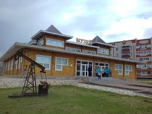
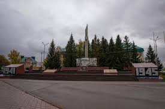
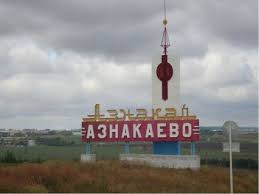

Азнакаево — это не просто точка на карте Татарстана, а город с душой, где суровый быт нефтяников переплетается с древними легендами о серебряных горах.
Главный символ города — гора Чатыр-Тау. Это самая высокая точка республики, которую местные жители называют «Шатер-горой».
История Азнакаево началась еще в первой половине XVIII века (официально упоминается с 1743–1762 годов). Долгое время это было обычное татарское село, где люди пасли скот и выращивали хлеб.
Все изменилось в 1953 году, когда здесь нашли «черное золото» — нефть. На месте вчерашних полей выросли вышки, а село превратилось в современный благоустроенный город (статус города получен в 1987 году).
Сейчас в Азнакаево живет около 35 тысяч человек. Это уютный, зеленый город на реке Стярле, который славится:


